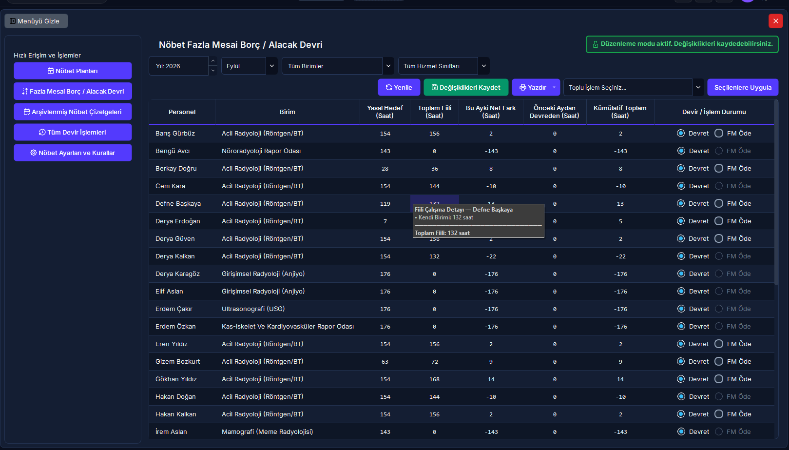
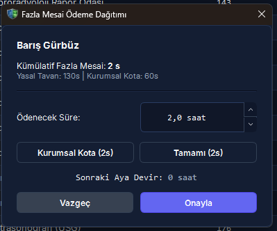

Nöbet Borç / Alacak ve Fazla Mesai Yönetimi
3153 sayılı Kanun (haftalık 35 saat) ve 657 sayılı Kanun (haftalık 40 saat) mesai rejimlerine, resmi tatil ve arife saat 13:00 indirimlerine ile onaylı izinlere göre aylık yasal hedef saati hesaplar; iki ay gecikmeli devir, 60 saat koruyucu kota, 657 DMK Ek Madde 33 kapsamındaki 130 saatlik ödeme tavanı ve mutemetlik bildirim cetvelini yönetmenizi sağlar.
Kısa Reçete: Fazla Mesai Mutabakatı, Ödeme Dağıtımı ve İcmal Alma
Yayınlanmış çizelgeden doğan fazla veya eksik mesailerin hatasız kesinleştirilmesi, koruyucu kota/yasal tavan kurallarıyla mutemetlik bildirim cetvelinin üretilmesi.
Dönemi ve birimi seçip [Yenile] ile hesaplamayı alın; bireysel satırlarda [FM Öde] üzerinden veya toplu olarak [Toplu İşlem Seçiniz...] + [Seçilenlere Uygula] ile ödeme/devir kararını belirleyip [Değişiklikleri Kaydet] ve [Dışa Aktar] adımlarını uygulayın.
İki ay önceki devir (örneğin Ocak bakiyesi Mart planına) otomatik işlenir; ödeme kararı kaydedildiğinde dönem mühürlenir ve yalnızca yönetici şifresiyle geçici düzenlemeye açılır.
5N1K Kural ve Arayüz Çözümleme Tablosu
Fazla mesai hesaplama, devir gecikmesi, kota/tavan kalkanları, dönem kilidi ve mutemetlik çıktısı kuralları.
Kritik Sahada Yanlış Bilinen Kurallar (Mit Avcısı)
Süreç Akış Şeması
Durumu"} -->|Eksi veya Sıfır| F["Ödeme Kilitli: Sonraki Aya Devir"] E -->|Artı Bakiye| G{"Dağıtım Seçimi"} G -->|Kota| H["60s Öde + Kalan Devir"] G -->|Tavan| I["Maks 130s Öde + Kalan Devir"] G -->|Devir| J["0s Öde + Tamamını Devir"] end subgraph S3 ["3. AŞAMA: MÜHÜRLEME VE MUTEMETLİK"] direction LR K["Değişiklikleri Kaydet"] --> L["Dönem Kilidi (Düzenlemeye Kapalı)"] L -.->|Yönetici Şifresi| M["Kilidi Aç"] L --> N(["Dışa Aktar: 5 Sütunlu Resmi Cetvel"]) end D ==> E F & H & I & J ==> K
- Hedef ve Devir Hesabı: Yayınlanmış nöbetler, resmi tatil/arife 13:00 indirimleri, izinler ve iki ay önceki dönemden devreden bakiye birleştirilerek kümülatif saat netleştirilir.
- Ödeme ve Devir Dağıtımı: Eksi/sıfır bakiyede ödeme kapalı kalır; artı bakiyede koruyucu 60 saat kota, yasal 130 saat tavan veya tam devir kararı seçilir.
- Mühürleme ve Mutemetlik: Kayıtla birlikte dönem kilitlenir (yalnızca yönetici şifresiyle açılır) ve bayram saati ayrıştırılmış 5 sütunlu resmi cetvel Excel, PDF, Word veya yazıcı çıktısı olarak alınır.
Arayüz Ekran Görünümleri


Adım Adım İşlem Rehberi
1. Dönemi Yükleme ve Bakiye Hesabını Doğrulama
- Sol menüden [Nöbet Yönetimi] > [Fazla Mesai Borç / Alacak Devri] ekranını açın; Yıl, Ay, Birim ve Hizmet Sınıfı süzgeçlerini seçip [Yenile] butonuna tıklayın.
- Tabloda yasal hedef saati, fiili nöbet saatini (fare imlecini hücre üzerine getirerek 35s/40s ve birim detayını görebilirsiniz), iki ay önceki devri (örneğin Ocak bakiyesi Mart planına) ve kümülatif net farkı inceleyin.
2. Bireysel ve Toplu Ödeme / Devir Kararını Kaydetme
- Artı bakiyeli bir satırda [FM Öde] butonuna tıklayın; açılan pencerede [Kurumsal Kota (60s)], [Tamamı (130s)] veya özel saat girerek alttaki canlı devir hesabını kontrol edip [Onayla] butonuna basın.
- Birden fazla satırı seçip üstteki [Toplu İşlem Seçiniz...] menüsünden kural seçerek [Seçilenlere Uygula] butonunu çalıştırın; işlemler bitince sağ üstteki [Değişiklikleri Kaydet] butonuna tıklayarak dönemi onaylayıp kilitleyin.
3. Kilitli Dönemi Açma, Mutemetlik İcmali Alma ve Web İzleme
- Kesinleşmiş kilitli bir dönemde düzeltme gerekirse [Kilidi Aç] butonuna basın, yönetici şifrenizi doğrulayın, düzenlemeden sonra tekrar [Değişiklikleri Kaydet] ile dönemi kilitleyin.
- Kayıt tamamlandıktan sonra [Dışa Aktar] butonundan Excel, PDF, Word veya Yazıcı seçeneğiyle T.C. Kimlik No, Ad Soyad, Görev Yeri, Normal FM ve Bayram FM sütunlarını içeren resmi cetveli alın.
- Web Portalında İzleme: Nöbet Paneli altındaki borç/alacak sekmesinden hedef, fiili ve fark saatleri, onaylı izin gün sayısını (X Gün İzinli rozeti) ve tek tıkla Excel/PDF çıktısını tarayıcıdan takip edebilirsiniz.
Sıkça Sorulan Sorular (SSS)
Kümülatif fazla mesai 150 saat iken sistem neden en fazla 130 saat ödetiyor?
657 sayılı Devlet Memurları Kanunu Ek Madde 33 gereğince bir ayda ücret ödenebilecek azami fazla mesai sınırı 130 saattir. Bu tutarı aşan süre silinmez ve takip eden döneme devir bakiyesi olarak aktarılır.
60 saatlik Kurumsal Kota personelin hakkını azaltır mı?
Hayır. 60 saatlik kota bir bütçe kısıtlaması değil, personelin tükenmişliğini önlemeye yönelik koruyucu iş sağlığı kotasıdır. Ödenmeyen kalan süre hak edişten silinmez, sonraki aya devrederek denkleştirme ve izin olanağı sağlar.
Neden yeni ayın otomatik nöbet planını oluştururken geçmiş mutabakat uyarısı alıyorum?
Fazla mesai devri iki ay gecikmeli çalıştığı için planlanan aydan iki ay önceki döneme ait nöbetçi personellerin borç/alacak mutabakatı henüz kaydedilmemişse dağıtım motoru durur. İlgili ayı bu ekrandan hesaplayıp [Değişiklikleri Kaydet] ile kaydettiğinizde engel kalkar.
Ödemesi kaydedilen dönem kilitlendikten sonra nasıl düzeltilebilir?
Mutemetliğe iletilen saatlerin yetkisiz değişmesini önlemek için kayıt sonrası dönem kilitlenir. Düzeltme ihtiyacı yalnızca yetkili yöneticinin [Kilidi Aç] butonundan kendi kullanıcı şifresini doğrulamasıyla geçici olarak açılabilir.